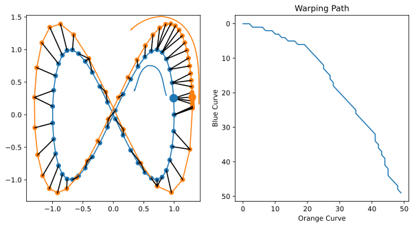

Lab 4: Dynamic Time Warping (6 Points)
Chris Tralie
Overview / Logistics
The purpose of this lab is to get you practice with dynamic programming and backtracing optimal solutions. To that end, you will be implementing the dynamic time warping algorithm to match two piecewise linear curves to each other.
When you are finished, upload your code with the method dtw to canvas.
Part 1: Dynamic Programming Cost (3 Points)
Your first task is to implement the dynamic time warping algorithm described in the notes to compute an optimal warping path between a sequence of points X and a sequence of points Y. Create a method dtw to accomplish this. The method should take as input two lists of points, and it should return the cost of the optimal warping path between them.
Implementation Details
If X has M points and Y has N points, then you should fill in an M x N dynamic programming table called S. As you're filling in S, you can use the following code to compute the distance between two points u and v
Usain Bolt
Let's suppose you want to test the Usain Bolt example from the notes. Then you can run the following code
If this works, you should get the optimal solution of 19.8. Make sure you're getting this number before you proceed.
Part 2: Backtracing An Optimal Warping Path (3 Points)
Once you feel you have the table right, you should add code to remember the optimal choices you made so you can trace back to extract the optimal warping path. For the purposes of this assignment, it's fine to break ties arbitrarily if there happen to be multiple warping paths that achieve the optimal cost. So your solution should be similar to how the iterative backtracing was done in edit distance, using a while loop. When you are finished, you should return the warping path expressed as a list. Be sure to return a path that starts at [0, 0] and ends at [M-1, N-1], not the other way around. As in the edit distance example, you may find that the reverse method of python lists comes in handy.
Usain Bolt
If this is working properly, you should get the following warping path for the Usain Bolt example: [[0, 0], [0, 1], [1, 2], [2, 3], [3, 4]]
Figure 8
Below is a slightly more intricate example that you can test before moving onto audio. It matches two sets of point samples on Figure 8 curves in 2D which go at different rates around the Figure 8:
If this works properly, you should get a result like the following, where you see the points are well-matched even though the two Figure 8s have been warped in time:
